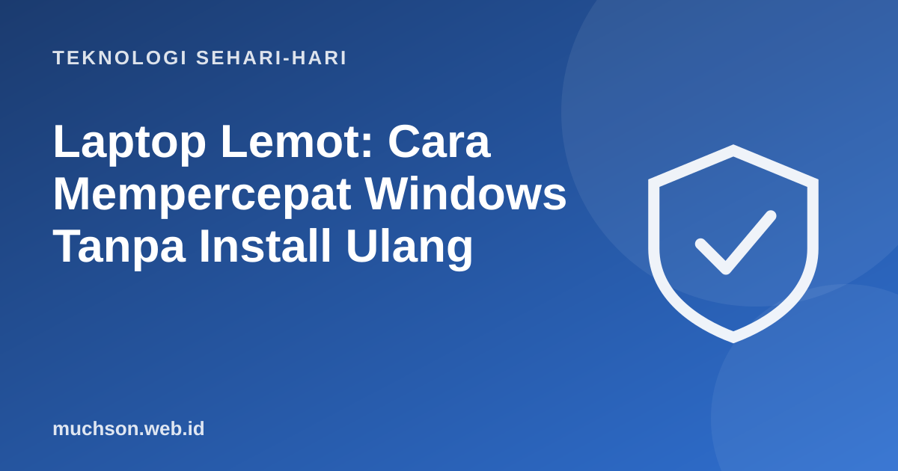

Beranda › Artikel › Teknologi Sehari-hari
Teknologi Sehari-hariLaptop Lemot: Cara Mempercepat Windows Tanpa Install Ulang
Laptop butuh lima menit untuk menyala, browser tersendat, dan kipas berbunyi keras padahal hanya membuka dokumen. Sebelum menyerah dan menginstal ulang Windows, coba langkah-langkah berikut. Banyak laptop kembali gesit hanya dengan merapikan program startup, atau dengan satu upgrade murah: mengganti hard disk dengan SSD.

Mulai dari Task Manager
Tekan Ctrl + Shift + Esc untuk membuka Task Manager. Di tab Processes, urutkan berdasarkan CPU, Memory, dan Disk. Bila salah satu sering mendekati 100%, itulah yang menghambat.
| Yang penuh | Artinya | Arah solusi |
|---|---|---|
| CPU | Prosesor sibuk | Cari program yang memakan CPU, cek malware, cek suhu |
| Memory (RAM) | Meja kerja terlalu penuh | Kurangi tab dan program terbuka, pertimbangkan tambah RAM |
| Disk | Penyimpanan bekerja keras | Sering terjadi pada hard disk (HDD); upgrade ke SSD paling terasa |
Langkah perbaikan berurutan
Program startup adalah penyebab yang paling sering terlupa. Aplikasi chat, pembaru otomatis, dan aplikasi cloud yang semuanya menyala saat laptop dihidupkan bisa membuat lima menit pertama terasa sangat berat.
Upgrade yang paling terasa: SSD
Bila laptop Anda masih memakai hard disk (HDD), mengganti dengan SSD sering memberi peningkatan paling dramatis. SSD tidak punya piringan yang berputar, sehingga waktu menyala, membuka program, dan mencari berkas jauh lebih cepat. Cara mengecek: Task Manager → Performance → Disk, lihat jenisnya (HDD atau SSD).
Bagaimana dengan RAM?
RAM 4 GB terasa sempit untuk Windows modern dengan browser berisi banyak tab. 8 GB nyaman untuk pekerjaan kantor dan kuliah, 16 GB untuk pekerjaan yang lebih berat. Pastikan laptop Anda memang bisa ditambah RAM; sebagian laptop tipis memakai RAM yang disolder dan tidak bisa diupgrade.
Kapan instal ulang?
Instal ulang (atau fitur Reset this PC di Windows) layak dipertimbangkan bila semua langkah di atas tidak membantu, ada banyak program sisa yang sulit dibersihkan, atau ada indikasi malware yang membandel. Sebelumnya, backup semua data dan pastikan Anda punya kunci lisensi program penting.